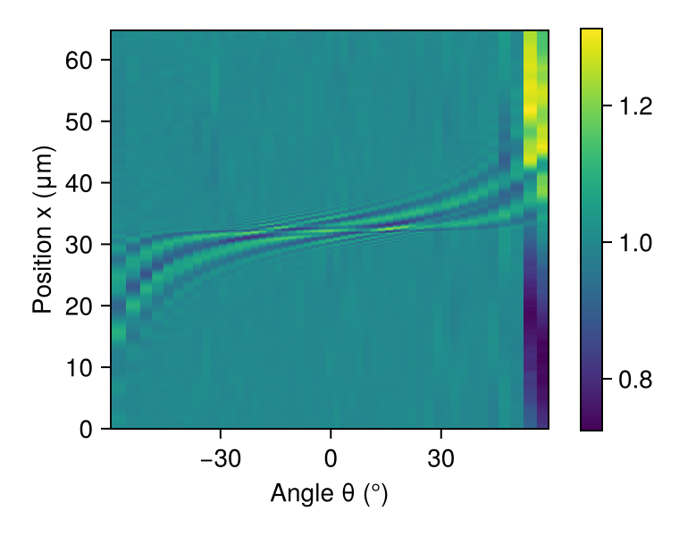
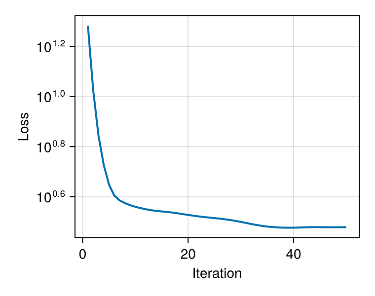
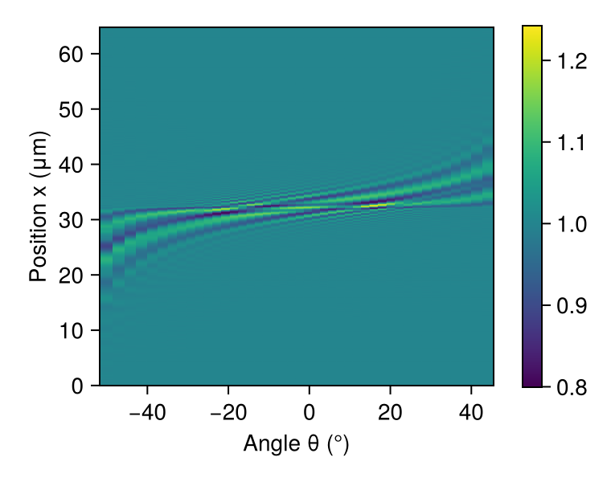
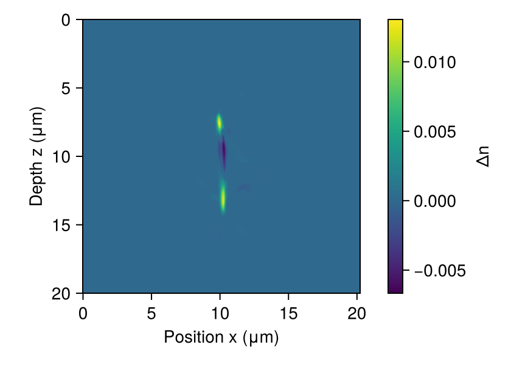
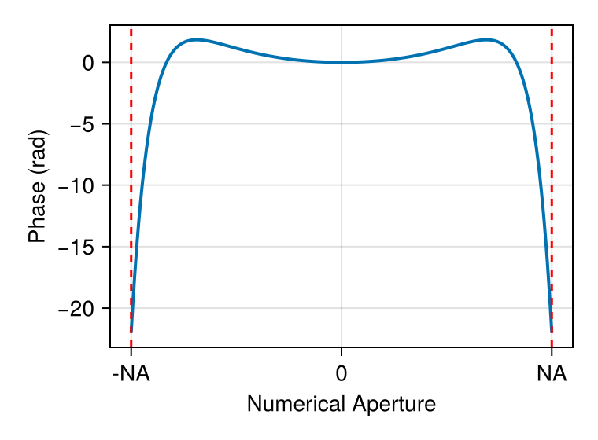

Waveguide Tomography: Cross-Section Reconstruction
This tutorial demonstrates tomographic reconstruction of the refractive index profile of a photoinscribed waveguide in glass. By measuring the transmitted intensity at multiple illumination angles, we reconstruct the 2D cross-section of the waveguide using angular spectrum beam propagation and inverse optimization.
Reference
This tutorial follows the approach described in: N. Barré, R. Shivaraman, L. Ackermann, S. Moser, M. Schmidt, P. Salter, M. Booth, and A. Jesacher, "Tomographic refractive index profiling of direct laser written waveguides", Opt. Express 29, 35414-35425 (2021).
Unlike traditional tomography based on the Born or Rytov approximations, this approach uses full wave propagation through the sample with accelerated proximal gradient descent. This handles strong refractive index contrasts and gradients without approximation. A key feature is joint estimation of optical aberrations alongside the refractive index profile, which is critical for using high-angle data and achieving accurate reconstructions.
Physical Setup
The waveguide is invariant along the propagation direction (y), allowing us to treat it as a 2D problem. We illuminate the sample at different angles θ and measure the transmitted intensity pattern. The angular diversity provides the tomographic information needed to reconstruct the refractive index profile Δn(x,z).
using FluxOptics, Zygote, CairoMakie
using JLDExperimental Data
We load the measured intensity map I(x,θ) showing the transmitted field intensity as a function of transverse position x and illumination angle θ. The data comes from a photoinscribed waveguide in borosilicate glass.
data = "docs/literate/data"
tomogram_data = load("$(data)/tomogram_guide_b.jld")
dx = tomogram_data["dx"] # Pixel size (μm)
I_measured = tomogram_data["I"] # Intensity map I(x,θ)
θ_angles = tomogram_data["θ_l"]; # Illumination angles (rad)Visualize the full measured tomogram showing intensity variation with angle
fig_full = Figure(size = (380, 300))
ax = Axis(fig_full[1, 1], xlabel = "Angle θ (°)", ylabel = "Position x (μm)", aspect = 1.1)
hm = heatmap!(ax, rad2deg.(θ_angles), (0:size(I_measured, 1)-1) .* dx, I_measured')
Colorbar(fig_full[1, 2], hm)
fig_full
Angular Selection
We select a subset of angles around normal incidence (θ ≈ 0) for reconstruction. Each angle provides a different view of the waveguide structure. The intensities are normalized to unit power at each angle.
angle_indices = (25 - 20):1:(25 + 22)
θ_selected = θ_angles[angle_indices]
I_selected = I_measured[:, angle_indices]
I_selected .*= size(I_selected, 1) ./ sum(I_selected, dims = 1)
nx = size(I_selected, 1)
n_angles = length(θ_selected);Visualize the selected angular range used for reconstruction
fig_selected = Figure(size = (380, 300))
ax = Axis(fig_selected[1, 1], xlabel = "Angle θ (°)", ylabel = "Position x (μm)", aspect = 1.1)
hm = heatmap!(ax, rad2deg.(θ_selected), (0:nx-1) .* dx, I_selected')
Colorbar(fig_selected[1, 2], hm)
fig_selectedForward Model: Beam Propagation Through Sample
We construct the optical system modeling wave propagation through the waveguide. The system consists of:
- Multi-angle plane wave illumination with tilts θ
- AS-BPM propagation through the sample (trainable refractive index)
- Free-space propagation with NA-limited collection aperture
- Aberration correction using a Fourier-space phase basis
n_bulk = 1.52 # Bulk refractive index of glass
λ = 0.455 # Blue illumination wavelength (μm)
NA = 1.4 # Numerical aperture of collection optics
nz = 300 # Number of propagation steps
L_sample = 20 # Sample thickness (μm)
Δn_initial = zeros(nx, nz); # Initial refractive index perturbationCreate multi-angle source field
u0 = ScalarField((nx, n_angles), (dx,), λ; tilts = (θ_selected,))
fill!(u0, 1)
s = ScalarSource(u0);Beam propagation through sample (trainable)
sample = AS_BPM(u0, L_sample, n_bulk, Δn_initial;
use_cache = false, trainable = true, buffered = true);NA-limited collection aperture
make_diaphragm(NA, λ) = fx -> abs(fx) <= abs(NA/λ) ? true : false
Δz_propagation = -6 # Free-space propagation distance (μm)
p_collection = ASProp(u0, Δz_propagation; n0 = n_bulk,
filter = make_diaphragm(NA, λ),
use_cache = false); # Small data: cache slower than recomputeAberration Correction
Optical aberrations in the collection path (e.g., from refractive index mismatch between sample and immersion medium) are modeled using a radial polynomial basis in Fourier space. We jointly estimate these aberrations alongside the refractive index profile - a form of blind deconvolution.
This joint estimation is crucial: the paper shows that neglecting aberrations produces significant artifacts in the reconstructed index profile, especially when using high-angle illumination data. The radial polynomial basis (even orders up to 16th) captures spherical-like aberrations common in high-NA imaging systems.
spatial_freq_offsets = sin.(θ_selected) .* (n_bulk/λ)
function radial_polynomial(fx, f0, λ, NA, p)
abs(fx + f0) <= abs(NA/λ) ? (abs(fx + f0) * λ / NA)^(2*p) : 0.0
end
aberration_mask = FourierPhase(u0, zeros(nx, n_angles);
trainable = true, buffered = true);
n_basis = 8
basis_functions = make_fourier_basis((fx, f0, p) -> radial_polynomial(fx, f0, λ, NA, p),
(nx,), (dx,), spatial_freq_offsets, (1:n_basis)')
aberration_wrapper = BasisProjectionWrapper(aberration_mask, basis_functions,
zeros(n_basis));Complete optical system
system = s |> sample |> p_collection |> aberration_wrapper |>
(; inplace = true, merge_components = true);Loss Function and Optimization Setup
We minimize the squared difference between measured and simulated intensities. The waveguide refractive index and aberration coefficients are jointly optimized.
For regularization, we use ISTA (Iterative Shrinkage-Thresholding Algorithm) which promotes sparsity in the reconstruction. This is simpler than the TV-norm regularization used in the original paper, and produces smoother profiles without the "staircase" artifacts characteristic of total variation methods.
I_target = similar(u0.electric, real(eltype(u0)))
copyto!(I_target, I_selected)
intensity_metric = SquaredIntensityDifference((u0, I_target));
f_opt = m -> sum(intensity_metric(m().out));Initialize trainable components
fill!(sample, 0)
fill!(aberration_wrapper, 0)
fill!(aberration_mask, 0);Separate optimization rules for sample and aberrations
sample_rule = ProxRule(Fista(0.01), IstaProx(3e-5)) # ISTA regularization
aberration_rule = Fista(0.03)
rules_dict = make_rules(sample => sample_rule,
aberration_wrapper => aberration_rule)
opt = FluxOptics.setup(rules_dict, system)Reconstruction Loop
We run 50 iterations of FISTA with proximal regularization. The algorithm alternates between updating the refractive index profile and correcting for optical aberrations, progressively refining the tomographic reconstruction.
losses = Float64[]
for i in 1:50
val, grads = Zygote.withgradient(f_opt, system)
FluxOptics.update!(opt, system, grads[1])
push!(losses, val)
endConvergence curve showing reconstruction progress
fig_loss = Figure(size = (380, 300))
ax = Makie.Axis(fig_loss[1, 1], yscale = log10, xlabel = "Iteration", ylabel = "Loss")
lines!(ax, losses; linewidth = 2)
fig_loss
Reconstructed Intensity Pattern
The optimized forward model closely matches the measured intensities across all angles, validating the reconstruction accuracy.
I_reconstructed = abs2.(collect(system().out))
fig_recon_intensity = Figure(size = (380, 300))
ax = Axis(fig_recon_intensity[1, 1],
xlabel = "Angle θ (°)", ylabel = "Position x (μm)", aspect = 1.1)
I_reconstructed = abs2.(collect(system().out))
hm = heatmap!(ax, rad2deg.(θ_selected), (0:nx-1) .* dx, I_reconstructed')
Colorbar(fig_recon_intensity[1, 2], hm)
fig_recon_intensity
Refractive Index Profile
The reconstructed 2D refractive index perturbation Δn(x,z) reveals the waveguide cross-section. The computational domain was chosen large enough to accommodate high-angle illumination without edge effects. We now crop to the central region containing the waveguide for visualization. The photoinscribed region shows increased refractive index, characteristic of direct laser writing in glass.
n_trim = 550 # Crop to central region containing the waveguide
Δn_reconstructed = collect(sample)[(1 + n_trim):(end - n_trim), end:-1:1]
fig_profile = Figure(size = (420, 300))
ax = Axis(fig_profile[1, 1], xlabel = "Position x (μm)", ylabel = "Depth z (μm)")
hm = heatmap!(ax, (0:(nx - 2*n_trim - 1)) .* dx, (0:(nz-1)) .* (L_sample/nz), Δn_reconstructed)
ax.aspect = DataAspect()
ylims!(ax, L_sample, 0)
Colorbar(fig_profile[1, 2], hm, label = "Δn")
fig_profile
Recovered Aberration Profile
The optimization also recovers the optical aberration profile as a function of numerical aperture. The radial polynomial basis captures symmetric aberrations in the collection optics. The phase correction is valid within the collection NA window (shown by red dashed lines).
NA_range = (-NA):0.01:NA
fx_range = NA_range ./ λ
coefficients = collect(aberration_wrapper)
aberration_phase = sum([coefficients[i] * radial_polynomial.(fx_range, 0, λ, NA, p)
for (i, p) in enumerate(1:n_basis)])
fig_aberration = Figure(size = (380, 280))
ax = Axis(fig_aberration[1, 1], xlabel = "Numerical Aperture", ylabel = "Phase (rad)",
xticks = ([-NA, 0, NA], ["-NA", "0", "NA"]))
lines!(ax, NA_range, aberration_phase; linewidth = 2)
vlines!(ax, [NA, -NA]; linestyle = :dash, color = :red, linewidth = 1.5)
fig_aberration
Summary
This tomographic reconstruction demonstrates several key capabilities:
Full wave propagation: Unlike Born/Rytov approximations, we use full angular spectrum beam propagation, handling strong index contrasts accurately.
Joint optimization: Simultaneous reconstruction of refractive index profile and optical aberrations (blind deconvolution) enables use of high-angle data.
Modern optimization: FISTA with proximal operators provides efficient convergence. ISTA regularization produces smooth profiles without the staircase artifacts of TV-norm methods used in earlier implementations.
Quantitative imaging: The method achieves sub-micrometer spatial resolution and can detect refractive index changes below 10⁻³, essential for characterizing photoinscribed optical structures.
Applications include optical metrology, waveguide characterization for integrated photonics, quality control in direct laser writing, and quantitative phase imaging of phase objects.
This page was generated using Literate.jl.